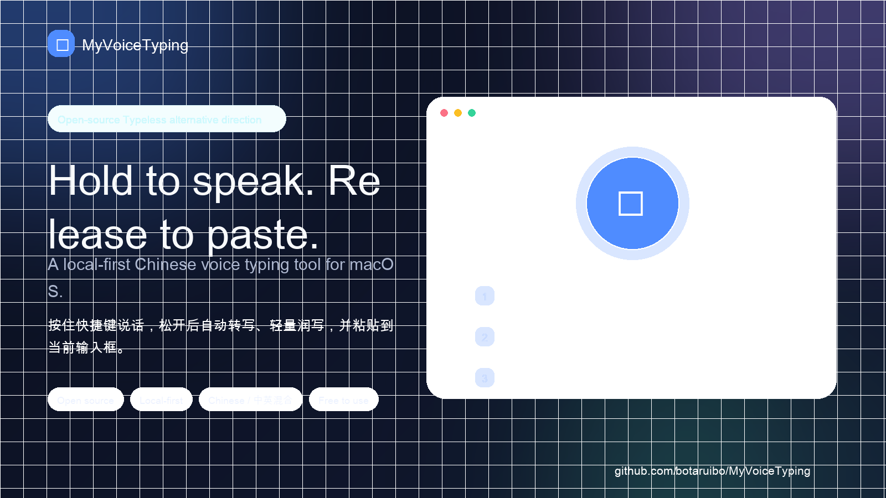
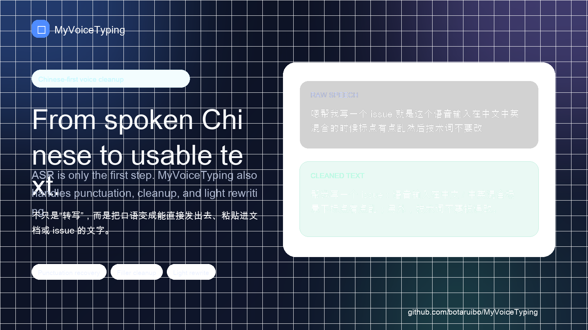
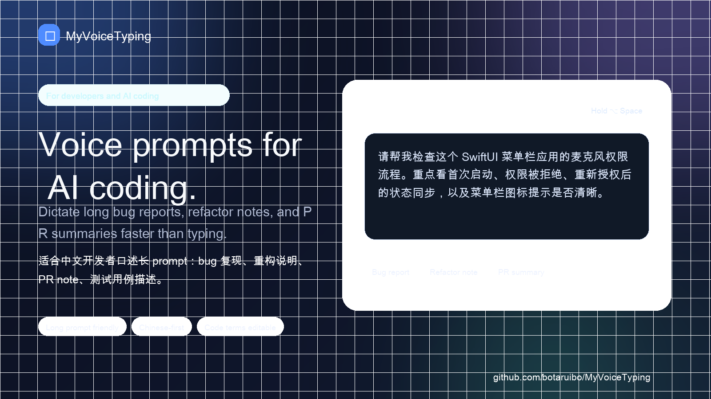
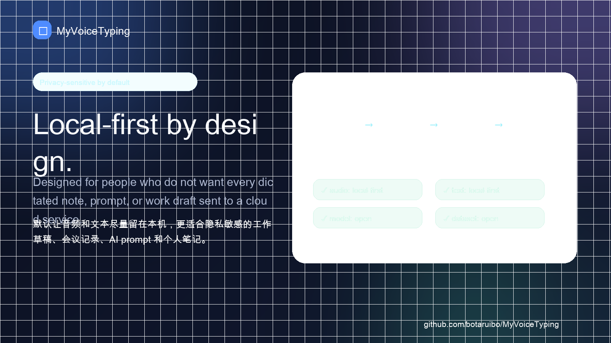
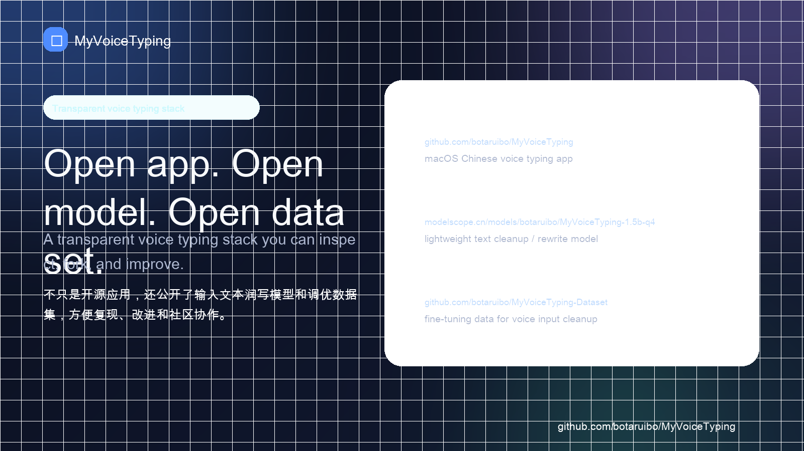

用中文说话，直接变成可用文字。
MyVoiceTyping 是一个面向 macOS 的开源中文语音输入工具。按住快捷键说话，松开后自动完成本地识别、标点恢复、轻量纠错/润写，并粘贴到当前输入框，也适合作为 Typeless / 闪电说之外的开源本地优先选择。
按住说话，松开粘贴
5 张截图快速看懂核心交互、中文润写、AI Coding、本地优先和开源资产。





不是会议转写，而是日常输入层
写需求、发消息、写 Issue、给 AI Coding 工具描述任务，都可以少敲一点键盘。
本地优先
默认尽量让音频、原始转写和润写后的文本留在本机，减少敏感内容外传风险。
中文优先
重点处理中文/中英混合输入里的标点、断句、错词、技术词和产品名。
0 费用
开源项目，可通过 GitHub Releases 下载安装试用。
Self-evaluation / 自进化
长期方向是将用户最终确认后的“原始转写 → 修改后文本”作为本地偏好数据，先用于本地评估、热词和规则优化；在用户明确授权后，再探索本地 LLM 轻量调优，让模型逐渐学会你的常用词、语气、项目术语和写作习惯。
开源可审查
应用代码、输入文本润写模型、调优数据集都公开，便于复现和二次开发。
适合这些场景
如果你经常把中文想法变成文字，MyVoiceTyping 会更像一个轻量输入增强层。
AI Coding prompt
口述 Bug 复现、重构需求、PR 说明，再检查后发送给 Cursor、Claude Code、Qwen Code 或 Copilot。
工作消息和邮件
把口语整理成更清楚的句子，同时尽量保持你的原意。
隐私敏感输入
公司需求、代码思路、客户上下文或私人内容，不想默认交给云端语音输入。
代码、模型、数据集都公开
这不是一个黑盒语音输入产品。你可以查看实现、下载模型、研究训练数据。
License / 使用边界：应用代码许可证仍在确认中；模型页当前标注 Apache-2.0，同时需遵守上游模型许可；数据集由多个公开来源整理，使用或再分发前请查看 Dataset 的 DATA_LICENSE 和 SOURCES。
Star 会帮助更多 macOS 中文用户发现这个本地优先、0 费用、App / 模型 / 数据集公开的语音输入项目。
如果你暂时没时间完整安装，但正在寻找 Typeless / 闪电说之外的开源本地优先方案，或者经常用语音输入写 AI Coding prompt、需求、Bug 复现和工作消息，也可以先 Star 关注后续 Demo、License 和试用体验完善。
项目还早期，欢迎真实反馈
比起空泛夸奖，更需要可复现的安装、权限、识别、润写和粘贴反馈。